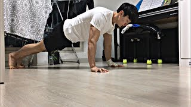

Push Ups
A Push-Up is a common calisthenics exercise beginning from the prone position. By raising and lowering the body using the arms, push-ups exercise the pectoral muscles, triceps, and anterior deltoids, with ancillary benefits to the rest of the deltoids, serratus anterior, coracobrachialis and the midsection as a whole. Push-ups are a basic exercise used in civilian athletic training or physical education and commonly in military physical training. They are also a common form of punishment used in the military, school sport, and some martial arts disciplines.